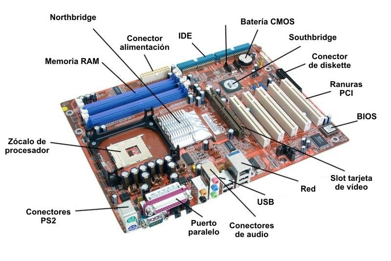

La Tarjeta Madre o tambien conocida como Board es el componente mas importante que tendra nuestra computadora, pues este dispositivo funciona como el circuito principal o plataforma de la computadora, pues integra y cordina todos los elementos, mediante la cordinaciond de todas las tarjetas del computador las cuales estan conectadas a esta Tarjeta dandole asi el nombre conocido de Tarjeta Madre, y ademas de las tarjetas de la computadora esta Tarjeta madre conecta distintas unidades como lo son el procesador, Memorias, Pantallas, Enchufes, Etc.
⠀
La historia de esta tarjeta madre comienaza con la modelo 5160 o abrevidad simplemente como XT (Extended Technology), lanzada en 1983 y solamente tenia un contenedor externo para un simple teclado.
⠀
la segunda tarjeta madre mas antigua seria la AT, creada por IBM. Una de sus novedades era un conector de potencia formado por dos partes, esta placa base fue muy usada siendo de 1985 a 1995 durando mas que su antecesor.
Las tarjetas madres actuales, han avanzado considerablemente si se ven a las 2 anteriores, pues estas contienen diversos puertos para conecar a monitores, proyectores, TV; Facilitando el uso de imagenes en diferentes dispositivos. Y eso no es todo ,muchas de estas tarjetas madres acutales son incluso capaces de soportar hasta 64Gbs de memoria ram siempre y cuando tenga 4 ranuras de memoria, ya que el limite por cada memoria separada es actualmente de 16GB.

Estas son algunas de las partes que contiene la placa base son las siguientes:
⠀
El zocalo: Dispositivo por el cual el procesador se conecta y estacuidadosamente diseñado para que el procesador solo quepa en el lugar adecuado.⠀
memoria DDR: Tambien conocido como las ranuras de la memoria ram, es donde se cargan los programas y datos activos para que cada vez que el procesador los necesite no tenga que recuperarlos del disco duro.⠀
Batería CMOS: Suministra energía para almacenar la configuración de la BIOS y mantener en funcionamiento el reloj en tiempo real.⠀
Conectores de almacenamiento: Sirven para conectar discos duros mecánicos, dispositivos e almacenamiento de estado solido (SSD) y tambien de almacenamiento óptico como las grabadoras DVD.⠀
Northbridge: Es un chipset el cual permite que la CPU se comunique con la RAM y la tarjeta gráfica.
